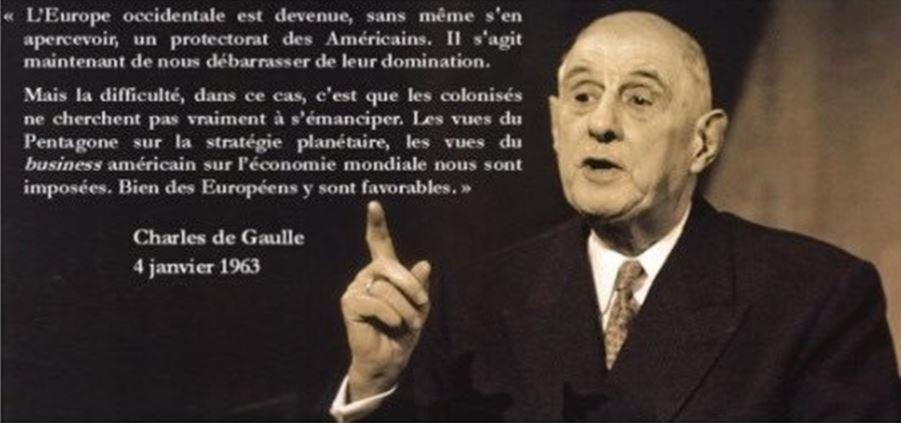
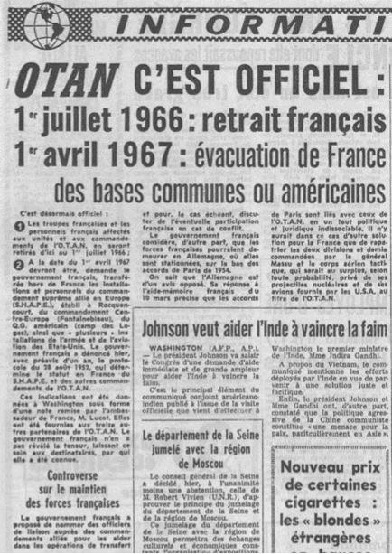
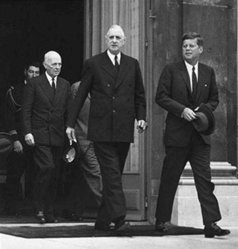
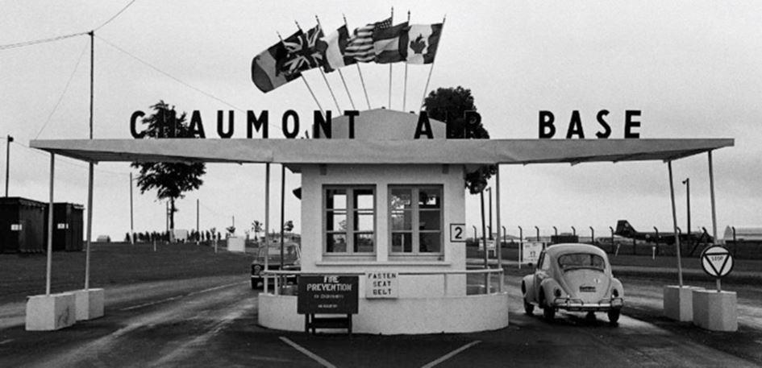
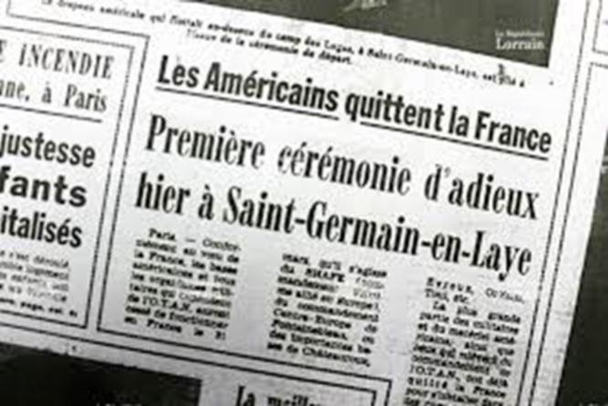

« Allié, mais pas vassal » : Le 7 mars 1966, De Gaulle sort de l’OTAN
par Raphaël DARGENT
Le 13 novembre dernier, à bord du porte-avion Charles de Gaulle, le président Macron, interrogé sur les relations franco-américaines, s’est fendu d’une formule tout gaullienne : « Être allié, ce n’est pas être vassal ».
L’occasion est trop belle pour nous de rappeler quelles furent les motivations du Général lorsque le 7 mars 1966 il fit sortir notre pays de l’OTAN. Une politique d’indépendance qui fait encore aujourd’hui figure de glorieuse parenthèse.
Le 7 mars 1966, le général de Gaulle écrit à son homologue américain, Lyndon Johnson, une courte lettre qui aura l’effet d’une bombe. Il y annonce le retrait de la France de l’OTAN. Voici ce qu’écrit le Président français :
« La France considère que les changements accomplis ou en voie de l’être, depuis 1949, (…) ainsi que l’évolution de sa propre situation et de ses propres forces, ne justifient plus (…) les dispositions d’ordre militaire prises après la conclusion de l’alliance. (…) La France se propose de recouvrer sur son territoire l’entier exercice de sa souveraineté, actuellement entamé par la présence permanente d’éléments militaires alliés ou par l’utilisation habituelle qui est faite de son ciel, de cesser sa participation aux commandements « intégrés » et de ne plus mettre de forces à la disposition de l’OTAN. (…) La France croit devoir (…) modifier la forme de notre alliance sans en altérer le fond. »
Cette lettre concernant l’Alliance atlantique, dans sa brutalité, est le fruit d’une évolution engagée de longue date par le Général, en réalité dès son retour au pouvoir. A y regarder de près, elle constitue un formidable condensé de sa politique étrangère, une politique certes pleine de pragmatisme mais fondée sur la doctrine de l’indépendance. Une politique à laquelle la France a peu à peu tourné le dos.
TROUVER UN MOYEN DE SORTIR
Le 14 avril 1966, René Pleven s’en prend avec force à la décision du Général lors d’un débat à l’Assemblée nationale. Il dénonce notamment « la hâte si insolite, les délais si brefs » d’une telle décision. Il accuse le gouvernement : « Vous nous avez trompés sur vos intentions, vous ne les avez pas dites à la nation. »
Dans cette affaire, M. Pleven feint la surprise et joue la comédie. Car enfin, comment pourrait-il ignorer, lui l’ancien Ministre de la Défense, si attentif à la question, le caractère au contraire continu et progressif de la politique du Général vis-à-vis de l’organisation atlantique ? Car enfin, comment peut-il s’étonner d’une telle décision, maintes fois évoquée par le Général et qui fit de surcroît l’objet de nombreuses dispositions préparatoires dans les années précédentes ? Cette décision constitue tout sauf une surprise ; elle couronne l’aboutissement d’une politique.
En effet, dès le 17 septembre 1958, trois ans à peine après son retour au pouvoir, le général de Gaulle fait parvenir au général Eisenhower et à Harold Macmillan un mémorandum dans lequel il constate que « l’organisation actuelle de l’alliance occidentale ne répond plus aux conditions nécessaires de la sécurité », il réclame une direction désormais tripartite de l’Alliance (Etats-Unis, Grande-Bretagne et France) et « y subordonne tout développement de sa participation actuelle à l’OTAN ». Devant le refus poli des anglo-saxons, il adapte aussitôt son attitude. Le 11 mars 1959, il décide de soustraire au commandement de l’OTAN nos forces navales de Méditerranée. En juin, il fait savoir son refus de stocker sur le territoire national des armes nucléaires étrangères, ce qui contraint les États-Unis à transférer hors de France deux cent avions militaires. La France s’engage alors, sans la coopération de ses alliés, dans son propre programme nucléaire, et c’est en février 1960 qu’explose la première bombe atomique française dans le désert du Sahara. En janvier 1963, le Général rejette la proposition américano-britannique de créer une force nucléaire multilatérale dans l’OTAN et menace de quitter l’organisation si celle-ci se fait malgré son avis. C’est d’ailleurs dans ce contexte qu’il met son veto à l’entrée dans le Marché commun de la Grande-Bretagne, jugée trop atlantiste. Enfin, le 21 juin 1963, la France retire ses forces navales de l’Atlantique et de la Manche du commandement allié.
Les représentants des nations signataires du pacte de l'Atlantique à Washington, le 27 janvier 1950 De gauche à droite : M. Bruce, Baron Sylvercruys (ambassadeur de Belgique aux États-Unis), Wilhehm Munthe de Morgenstierne (ambassadeur de Norvège), Dean Acheson (secrétaire d'État américain), Alberto Tarchiani (ambassadeur d'Italie), Henrik de Kauffmann (ambassadeur du Danemark), Hughes Le Gallais (ministre du Luxembourg aux États-Unis).
Qu’on en juge donc ! Ce rappel chronologique le montre assez nettement : ce n’est pas du jour au lendemain et sans coup férir que le Général décide de retirer notre pays de l’OTAN. Il n’y a donc pas lieu d’être surpris. En réalité, ce retrait est non seulement progressif mais programmé.
Au sujet du mémorandum de 1958, c’est bien plus tard que le Général révèlera ses véritables intentions, à demi-mots : « Dès septembre 1958, je hisse les couleurs. (…) Ainsi que je m’y attends, les deux destinataires de mon mémorandum me répondent évasivement. Rien ne nous retient donc d’agir. »1 Devant Alain Peyrefitte, il sera beaucoup plus clair : « « Ce mémorandum n’était qu’un procédé de pression diplomatique. Je cherchais alors à trouver un moyen de sortir de l’OTAN et de reprendre ma liberté, que la IVe République avait aliénée. Alors, j’ai demandé la lune. J’étais sûr qu’on ne me l’accorderait pas. (…) Mais en ne répondant pas à mon mémorandum, ils m’ont permis de prendre des dispositions qui m’amenaient à sortir peu à peu de l’OTAN, ce que je n’aurais pas pu faire si je n’avais pas d’abord essuyé ce refus. En fait, c’est ce que nous avons fait pas à pas depuis 1958. »2
Dans cette dernière citation, le Général dit « pas à pas » et c’est bien ainsi que l’on doit comprendre sa politique. Celle-ci, souhaitée de longue date, sera mise en œuvre étape après étape, avec résolution mais avec habileté. Aussi sera-t-elle continue mais progressive. Il s’agira de ménager les susceptibilités de nos alliés et ne pas brûler nos vaisseaux, il s’agira d’avancer chaque fois un peu plus loin à mesure de notre propre renforcement et d’attendre, pour sauter le pas, que la France soit à nouveau redevenue maîtresse de son destin.
De Gaulle cherchait donc dès son retour au pouvoir « un moyen d’en sortir ». Pourquoi ? Comme toujours chez de Gaulle, il faut distinguer ce qui tient des circonstances et ce qui tient des principes, faire la part du pragmatisme et celle de la doctrine.

S’ADAPTER AUX DONNÉES NOUVELLES
De Gaulle est un pragmatique. On ne le dit que trop. Et c’est en pragmatique qu’il justifiera sa décision.
Dans le texte du mémorandum de septembre 1958, précédemment évoqué, le Général mettra en avant des arguments liés aux réalités géostratégiques pour appuyer ses propositions de réforme de l’organisation atlantique. C’est ce qu’il fera toujours, jusqu’à la décision du 7 mars 1966. D’abord dans sa conférence de presse du 5 septembre 1960 : « Depuis dix ans, il y a eu beaucoup de changement. (…) La France considère que ce qui avait été fait il y a dix ans sur la base de l’intégration doit être mis à la page. (…) Le traité doit être révisé. Du reste, vous savez que le traité de l’Alliance Atlantique Nord a été fait en spécifiant qu’il pourrait être révisé après dix ans, et les dix ans sont écoulés. »3
Á ceux qui s’étonneront d’une telle audace, le Général ne manquera pas de répondre pour préciser sa pensée. Ainsi s’explique-t-il devant les Français le 21 février 1966 comme pour annoncer sa décision et préparer l’opinion : « Rien ne peut faire qu’une loi s’impose sans amendement quand elle n’est plus en accord avec les mœurs. Rien ne peut faire qu’un traité reste valable intégralement quand son objet s’est modifié. Rien ne peut faire qu’une alliance demeure telle quelle quand ont changé les conditions dans lesquelles on l’avait conclue. Il faut alors adapter aux données nouvelles la loi, le traité, l’alliance, sans quoi, les textes, vidés de leur substance, ne seront plus, le cas échéant, que de vains papiers d’archives, à moins que ne se produise une rupture brutale entre ces formes désuètes et les vivantes réalités. (…) Si la déclaration faite en commun (…) sous forme du Traité de l’Alliance Atlantique signé à Washington le 4 avril 1949, reste à ses yeux toujours valable, elle (la France) reconnaît, en même temps, que les mesures d’application qui ont été prises par la suite ne répondent plus à ce qu’elle juge satisfaisant, pour ce qui la concerne, dans les conditions nouvelles. »4
JUSTEMENT, CES CONDITIONS NOUVELLES, QUELLES SONT-ELLES ?
Le Général constate d’abord que si l’OTAN a été organisée en 1949 dans le cadre de la Guerre froide afin de contenir, et éventuellement de contrer, l’Union soviétique, force est de constater au milieu des années 60 que la menace sur le monde et notamment sur l’Europe est sérieusement retombée. Il souligne d’autre part que l’équilibre nucléaire entre les deux mastodontes que sont les États-Unis et l’URSS a fortement infléchi la doctrine américaine, et que la nouvelle stratégie qui en découle, dite de « riposte graduée », ne garantit plus l’Europe d’une intervention américaine en cas d’agression atomique. Il note ensuite que l’Amérique s’engage désormais dans des conflits lointains – c’est le cas au Vietnam –, conflits qui par le système de l’alliance risquent d’entraîner la France dans des guerres qu’elle ne souhaite pas. Enfin, et surtout, il affirme que l’Europe et a fortiori la France ne sont plus dans la situation catastrophique de l’après-guerre ; la France notamment s’est dotée de son propre armement nucléaire et cela change considérablement la donne : elle peut non seulement se défendre seule mais peut désormais faire entendre sa voix au sujet de la défense de l’Europe. Georges Pompidou, alors Premier ministre, reprendra le même argumentaire lorsque le 13 avril 1966 il justifiera la décision gaullienne devant l’Assemblée nationale.
RECOUVRER SA PLEINE SOUVERAINETÉ
Il ne s’agissait évidemment pas pour de Gaulle de s’opposer par principe aux Américains. Les États-Unis étaient nos alliés et le restaient. Le Général le rappellera maintes fois. On sait comme il assurera de son soutien sans faille le président Kennedy lors de la crise de Cuba.
Mais tout en réaffirmant le principe de l’Alliance atlantique signée en 1949, le Général s’opposera avec force à l’intégration qui présidait à l’organisation militaire de l’Alliance. Le Traité de 49 est une chose, l’organisation militaire qui en découle en est une autre.
Il n’aura de cesse de faire la distinction entre les deux. Ainsi déclare-t-il le 5 septembre 1960 : « Il nous paraît que la défense d’un pays, tout en étant combinée, bien entendu, avec celle d’autres pays, doit avoir un caractère national. (…) La France ne peut évidemment pas laisser son propre destin et même sa propre vie à la discrétion des autres. Voilà ce que la France entend par la réforme de cette organisation atlantique, tout en répétant qu’il ne s’agit absolument pas de se séparer les uns des autres, car jamais l’Alliance Atlantique n’a correspondu à un besoin aussi profond. »5 C’est dire si dans l’esprit du Général, la France n’est utile à ses Alliés que dans la mesure où elle a les mains libres. Sa décision de quitter l’OTAN prise, il précisera ainsi le 21 février 1966 « qu’il s’agit là, non point du tout d’une rupture, mais d’une nécessaire adaptation. »6 Dans l’aide-mémoire qu’il remettra le 10 mars 1966 aux quatorze représentants des membres de l’OTAN, il écrira : « L’Alliance doit se poursuivre aussi longtemps qu’elle apparaîtra nécessaire. Ceci étant affirmé sans équivoque. » En réalité, si de Gaulle défend l’alliance, il refuse la subordination, s’il reconnaît la vertu de l’association, il conteste celle de l’intégration. Et c’est bien là ce que Georges Pompidou affirmera le 13 avril 1966 : « Nous n’avons cessé, depuis des années, de proclamer aussi bien notre fidélité à l’Alliance atlantique, c’est-à-dire au traité d’avril 1949, que notre volonté de remettre en cause l’organisation militaire intégrée qui lui avait été superposée. »
L’intégration, voilà bien ce que refuse de Gaulle. Là-dessus, il est inflexible et d’une remarquable constance. Dans sa conférence de presse du 9 septembre 1965 il est par exemple sans ambiguïté : « Nous pouvons et, par conséquent, nous devons avoir une politique qui soit la nôtre. Laquelle ? Il s’agit, avant tout, de nous tenir en dehors de toute inféodation. Certes, dans des domaines multiples, nous avons les meilleures raisons de nous associer avec d’autres. Mais à condition de garder la disposition de nous-mêmes. C’est ainsi, qu’aussi longtemps que la solidarité des peuples occidentaux nous paraîtra nécessaire à la défense éventuelle de l’Europe, notre pays restera l’allié de ses alliés, mais qu’à l’expiration des engagements pris jadis, c’est-à-dire au plus tard en 1969, cessera, pour ce qui nous concerne, la subordination qualifiée " d’intégration" qui est prévue par l’OTAN et qui remet notre destin à l’autorité étrangère. »7 « Inféodation », « subordination », « autorité étrangère » les mots ont dû sembler très durs aux oreilles de nos alliés ; ce sont pourtant ceux qu’employait le Général quand il évoquait l’intégration.
Selon lui, accepter l’intégration revenait à accepter que les armements français soient placés sous commandement étranger, en l’occurrence américain. Cela, il ne pouvait l’accepter. Ainsi déclare-t-il, lors du Conseil des Ministres du 23 mars 1966 : « L’essentiel de la défense française, aujourd’hui, c’est l’arme atomique. Or, elle n’est pas intégrée. Et la défense américaine, est-ce qu’elle est intégrée ? Les forces américaines sont sous des commandements américains. Les forces alliées sont aussi sous des commandements américains. Il y a deux poids et deux mesures de l’intégration. »8
Il faut noter que de Gaulle refuse absolument le principe de l’intégration et ce quel que soit par ailleurs le sujet, qu’il s’agisse de l’OTAN ou de l’Europe. Pourquoi le Général aurait-il accepté une organisation intégrée de l’Alliance atlantique alors qu’il contestait une telle organisation pour le Marché commun ? Il s’oppose d’ailleurs sur ce point aux conceptions allemandes. « L’idée allemande est que l’intégration est bonne pour tout le monde. En réalité, elle est bonne pour eux. (…) Le mythe de l’intégration leur était commode parce qu’il permettait au vainqueur et au vaincu d’être dans le même sac. C’était le système Monnet. Il est agréable pour les Allemands et inacceptable pour nous. »9
J’ai dit que le Général ne s’opposait pas par principe aux Américains. Mais c’est pourtant un principe que le Général opposera aux volontés atlantiques d’intégration. Et c’est là le point central. Au-delà des considérations stratégiques du moment, au-delà des arguments pragmatiques qu’on a souligné, au-delà même des précautions tactiques dont on a dit que le Général pouvait user, un principe domine véritablement et ordonne toute la politique de De Gaulle : celui de la souveraineté nationale.
C’est ce qu’il dira aux Français le 21 février 1966 : « Au total, il s’agit de rétablir une situation normale de souveraineté, dans laquelle ce qui est français, en fait de sol, de ciel, de mer et de forces, et tout élément étranger qui se trouverait en France, ne relèveront plus que des seules autorités françaises. »10 C’est ce qu’il dira aussi à ses ministres lors du Conseil du 16 mars de la même année : « « Il faudra récupérer beaucoup de choses ; la plus importante d’entre elles, c’est quand même notre souveraineté. »11 C’est ce qu’il leur répétera lors du Conseil du 13 avril suivant : « Notre intérêt commun, c’est l’Alliance. Nous y sommes avec l’Allemagne et nous y restons avec eux. Non pas sur les mêmes bases qu’auparavant, mais comme l’État souverain que nous sommes redevenus. »12
Souveraineté. Voilà un principe que Monsieur Pleven et ses amis, qui signèrent une pétition contre la décision du Général, avaient bien du mal à admettre. René Pleven qui dans sa harangue au Gouvernement le 14 avril 1966 lui reprocha de céder à la « mystique de l’indépendance nationale absolue » (Pourquoi d’ailleurs « absolue » ? Existe-t-il seulement une indépendance « relative » ?) et condamna « le retour à l’égoïsme sacré », rengaine qui depuis a fait fortune.
Souveraineté, souveraineté… Le président américain Lyndon Johnson a lui aussi une étrange conception du principe si l’on en croit la réponse qu’il fait à de Gaulle le 22 mars 1966 : « Votre point de vue selon lequel la présence de forces militaires alliées sur le sol français porte atteinte à la souveraineté française me laisse perplexe… J’ai toujours considéré leur présence comme une manière sage et prévoyante d’exercer la souveraineté française. » Étrange en effet de considérer qu’un pays exerce sa souveraineté quand il décide de ne justement plus…l’exercer, pour la confier à d’autres. Conception qui, elle aussi, a fait depuis bien des émules, réunis sous l’agréable bannière de la « souveraineté partagée ».
LA PARENTHÈSE DE GAULLE
La décision prise, les 28 000 militaires américains stationnés en France devront par conséquent quitter le territoire. Perspective que le Général envisageait résolument et depuis longtemps. Sur ce point, le témoignage d’Alain Peyrefitte est éclairant. Le 18 novembre 1964, de Gaulle déclare à son Ministre de l’Information : « Si je claque la porte à tout le saint-frusquin de l’OTAN, qu’est-ce qu’il [le président Johnson] peut faire contre moi ? Rien. (…) Notre position est incomparable. Il n’y a personne d’autre qui soit capable d’avoir une politique indépendante, excepté la Chine. (…) Si je veux, je supprime l’OTAN et le commandement américain en Europe, je renvoie Lemnitzer [commandant en chef de l’OTAN], et tous les Américains qui sont ici. »13 Le 9 décembre de la même année, il lui annonce : « Tous les types qui sont au SHAPE vont être obligés de quitter la France. »14 Le 16 décembre suivant : « Entre nous et les Américains, sous des dehors courtois, c’est la lutte. Nous sommes les seuls qui leur tiennent tête ; alors, ils ont décidé de nous combattre durement. Tels qu’ils sont, les Américains, c’est-à-dire une démocratie, ça n’ira pas très loin. Seulement, ça ira tout au moins jusqu’à ce qu’ils quittent la France. Leurs troupes et leurs chefs. »15 Ses ministres pouvaient voir d’abord dans ce déménagement des difficultés pratiques à régler ; de Gaulle, lui, n’y voyait qu’une question de principe.
Là aussi, l’intendance suivrait. Au Conseil du 9 mars 1966, il constate : « Nous sommes un pays dans lequel, depuis vingt-cinq ans, il n’est pas né un Français qui se souvienne d’une France sans troupes étrangères. Ça ne peut pas durer éternellement. »16
Au Conseil restreint du 2 juin suivant, il est encore plus catégorique : « Ce qu’il faut, c’est enlever les soldats américains ; sinon, il n’y a pas de raison qu’ils ne restent pas éternellement chez nous, comme en pays occupé. »17 De Gaulle comparant en Conseil la présence des soldats US à celle d’une force d’occupation, n’est-ce pas une preuve supplémentaire de son puisant attachement à l’indépendance nationale ?
Inutile de dire que face à cette fermeté gaullienne, les autorités d’outre-Atlantique ne resteront pas de marbre. Au contraire, elles sauront organiser la riposte, provoquant une vague de francophobie (déjà !) dans l’opinion américaine, l’ambassadeur Bohlen souhaitant même réveiller l’opinion française contre de Gaulle et pariant sur un changement de pouvoir lors des législatives de 67. Michel Debré dans ses Mémoires note à ce sujet : « À la suite de la décision prise par le général de Gaulle de mettre fin à l’absurde « intégration » qui plaçait nos armées et, de ce fait, notre politique de défense sous le commandement américain et malgré le maintien de l’essentiel, c’est-à-dire le Pacte atlantique, nos rapports avec les dirigeants de Washington manquent de chaleur. C’est le moins que je puisse dire ! (…) Quel que soit l’éclat universel dont bénéficie le Général, ces dirigeants ne peuvent concevoir que l’Occident ne les suive pas aveuglément. Il est clair que l’administration et, avec elle, l’ensemble de ceux qui comptent aux Etats-Unis traitent d’une manière soupçonneuse la France du général de Gaulle et regrettent le temps des gouvernements obéissants de la IVe République. »18
C’est bien ces gouvernements-là, peut-être celui de Monsieur Pleven, que regretteront en effet les États-Unis. En témoigne la circulaire qu’enverra le secrétaire d’État Dean Rusk à tous les ambassadeurs américains des pays de l’OTAN : « Nous devons accorder peu d’importance aux opinions gaullistes. Nous devons agir avec l’idée que le leadership de De Gaulle en France est temporaire, qu’il sera remplacé par un gouvernement plus attentif aux souhaits de l’opinion publique, et donc plus favorable à l’OTAN »19, chose en effet qui ne manquera pas de se produire quelque trente ans plus tard.
Quant aux autres alliés, membres de l’OTAN et souvent européens, après avoir désavouer la position française de mars 66, ils resteront fidèles au principe de l’intégration.
D’ailleurs, la défense européenne n’a jamais été envisagée par eux que comme une composante d’une défense atlantique. C’est ainsi que le Traité de Maastricht qu’adopta la France, tout comme le Traité constitutionnel européen qu’elle rejeta, consacrèrent le principe d’une Politique européenne de sécurité commune « compatible » avec les options principales de l’OTAN. Récemment encore, au Parlement européen, les pays nouvellement admis dans l’Union européenne exhibaient à grand renfort d’affiches leur euro-atlantisme.
Finalement, en décembre 1995, la France réintégrait, après un rapprochement progressif, le comité militaire et le conseil des ministres de l’OTAN, avec le fol espoir d’influer sur la réforme de l’organisation. Las, alors que la fin de l’Union soviétique aurait en effet justifié une réforme profonde de l’OTAN et peut-être sa complète remise à plat, perspective que seul réclama l’ancien Premier ministre Pierre Messmer20, le système au contraire s’orienta vers une domination plus grande des Etats-Unis et de l’intégration. Paul-Marie de la Gorce qui n’était pas en la matière le moins informé et qui n’était pas non plus homme à formules outrancières, pouvait titrer alors sur le « Retour honteux de la France dans l’OTAN ».21
C’est ainsi que la politique résolue du général de Gaulle vis-à-vis de l’OTAN, politique qu’il affirma progressivement jusqu’au point d’orgue du 7 mars 1966, politique pragmatique mais fondée sur le principe de la souveraineté nationale, politique qui seule eût permis une défense européenne indépendante, ne fut qu’une parenthèse.
L’Histoire n’en finira donc jamais de nous surprendre. Contestant de Gaulle, René Pleven affirmait en 1966 que « la grandeur d’un pays n’est pas d’avoir les mains libres. » Force est de constater cinquante ans après que c’est au héraut de la IVe République qu’on donna raison.
R.D.
Notes :
1. Charles de Gaulle, Mémoires d’espoir, Tome I, Plon, p.214-215.
2. Alain Peyrefitte, C’était de Gaulle, Quarto Gallimard, p.360, 2002.
3. Charles de Gaulle, Discours et Messages, Tome III, Plon, p. 248.
4. Charles de Gaulle, Discours et Messages, Tome V, Plon, pp.17-18
5. Charles Gaulle, Discours et messages, Tome III, Plon, p. 249.
6. Charles de Gaulle, Discours et Messages, Tome V, Plon, p.18.
7. Charles de Gaulle, Discours et Messages, Tome IV, Plon, pp.383-384
8. Alain Peyrefitte, op. cit., p.1399.
9. Ibid., p.1400.
10. Charles de Gaulle, Discours et Messages, Tome V, Plon, p.18.
11. Alain Peyrefitte, op.cit., p.1399.
12. Ibid., p.1400.
13. Ibid., p.650 et p.652.
14. Ibid., p.656.
15. Ibid., p.657.
16. Ibid., p.1397.
17. Ibid., p.1402.
18. Michel Debré, Mémoires, Tome IV, Gouverner autrement, Albin Michel, p.250.
19. Vincent Jauvert, L’Amérique contre de Gaulle. Histoire secrète 1961-1969, Seuil, L’histoire immédiate, p. 149.
20. Pierre Messmer, revue « Défense nationale », novembre 1990.
21. Paul-Marie de la Gorce, « Retour honteux de la France dans l’OTAN » in Le Monde diplomatique, janvier 1996. Voir aussi du même auteur dans le même journal : « Quand l’Europe refuse une défense…européenne » (juillet 1997) et « L’Alliance atlantique, cadre de l’hégémonie américaine » (avril 1999).

Partager cette page